StreamNative is partnering with Snowflake to provide you with cost-effective real-time data streaming to Snowflake. This means providing you with best-in-class data ingestion methods tailored to meet your specific needs. This guide focuses on creating a Streaming Augmented Lakehouse using StreamNative's Ursa Engine with built-in support for Apache Iceberg™ and Snowflake Open Catalog. Apache Kafka® messages published to the StreamNative Ursa Cluster will be stored in object storage in Iceberg format. Without copying over the data through connectors, you can directly access data from Snowflake Open Catalog and start analyzing the data. To learn more about cost savings when using the StreamNative Ursa Engine to ingest data to Snowflake, visit this link.
StreamNative also supports ingesting data into Snowflake using Snowpipe or Snowpipe Streaming with Kafka or Pulsar Connectors that will not be discussed in this tutorial. For more information on using Connectors to ingest data into Snowflake, follow this link.
What You Will Build
- A Streaming Augmented Lakehouse powered by a Kafka-compatible StreamNative BYOC Ursa Cluster integrated with Snowflake Open Catalog.
What You Will Learn
- How to create a Snowflake Open Catalog
- How to deploy a StreamNative BYOC Ursa Cluster integrated with Snowflake Open Catalog
- How to publish Kafka messages to the StreamNative Ursa Cluster using Kafka Java Client
- How to query tables visible in Snowflake Open Catalog in Snowflake AI Data Cloud
Prerequisites or What You Will Need
- Familiarity with Terraform and Java.
- Familiarity with creating policies, roles and s3 buckets in AWS.
- A StreamNative account available at streamnative.io. Your account will come with $200 in free credits, sufficient for following this tutorial. No credit card is necessary.
- AWS Account for deploying the StreamNative BYOC Ursa Cluster. BYOC clusters are deployed into your cloud provider. These resources will incur AWS charges that are not covered by StreamNative.
- Permissions to create policies, roles, and s3 buckets in AWS, as well as apply the StreamNative Terraform vendor access module.
- Access to Snowflake account and ability to create a Snowflake Open Catalog account.
- Environment for executing Terraform modules and Java code.
Apache®, Apache Iceberg™, and Apache Kafka® are either registered trademarks or trademarks of Apache Software Foundation in the United States and/or other countries.
Before initiating the integration of Snowflake Open Catalog with StreamNative Cloud, please ensure the following steps are completed. The following video will also guide you through this process.
Create a Snowflake AI Data Cloud Account
Create a Snowflake AI Data Cloud Account. The homepage will look as follows.

Create Snowflake Open Catalog Account
To access the Snowflake Open Catalog console, a specialized Open Catalog Account must be created. This account type is specifically designed for managing Open Catalog features and functionality.
Enter Admin → Accounts → Toggle → Create Snowflake Open Catalog Account.
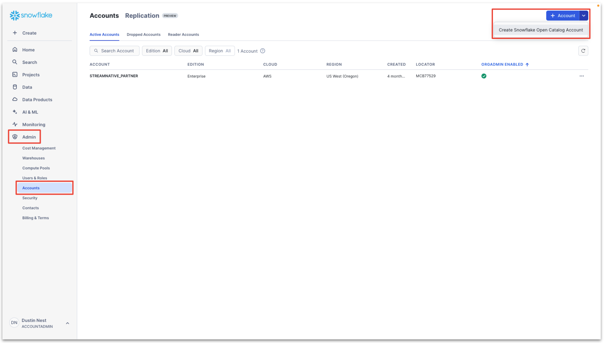
Configure the Snowflake Open Catalog Account.
- Cloud: AWS
- Region: region to place the Snowflake Open Catalog Account
- Edition: any

Next, input a Snowflake Open Catalog Account Name, User Name, Password, and Email. This will create a new user for use specifically with the Snowflake Open Catalog Account.

Click Create Account. You will see the following if account creation is successful. We highly recommend taking a screenshot of this confirmation message. This Account URL and Account Locator URL will be used in later steps.

Click the Account URL and sign into your Open Catalog Account with the User Name and Password you created for this account. You will enter the Snowflake Open Catalog console.
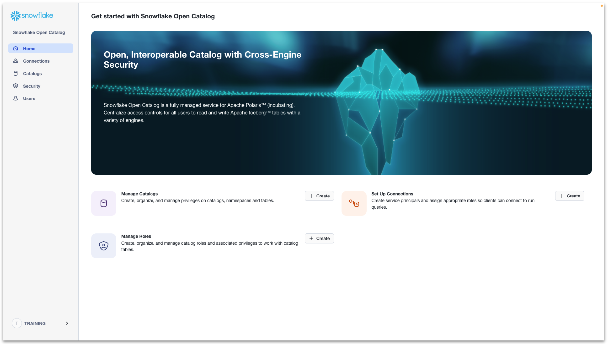
If you need the Account URL of your Snowflake Open Catalog Account in the future, navigate to Admin → Accounts → ... → Manage URLs of your Snowflake Open Catalog Account. This page is available in your Snowflake AI Data Cloud Account.

Setup storage bucket with permissions for StreamNative
Next we must choose the bucket location for the backend of our StreamNative BYOC Ursa Cluster and grant access to StreamNative Cloud. You have two choices to setup a s3 storage bucket for the StreamNative Ursa Cluster backend. This is where data will be stored in Iceberg format and accessed by Snowflake Open Catalog and Snowflake AI Data Cloud.
Option 1: Use your own bucket (recommended)
If you choose this option, you need to create your own storage bucket, with the option to create a bucket path. When using your own bucket, the resulting path you will use for creation of the Snowflake Open Catalog will be as follows. The compaction folder will be created automatically by the StreamNative cluster.
s3://<your-bucket-name>/<your-bucket-path>/compaction
StreamNative will require access to this storage bucket. To grant access, execute the following Terraform module.
- external_id: StreamNative organization, directions after terraform module for finding your StreamNative organization
- role: the name of the role that will be created in AWS IAM, arn needed when creating cluster
- buckets: bucket name and path
- account_ids: AWS account id
module "sn_managed_cloud" {
source = "github.com/streamnative/terraform-managed-cloud//modules/aws/volume-access?ref=v3.19.0"
external_id = "<your-organization-name>"
role = "<your-role-name>"
buckets = [
"<your-bucket-name>/<your-bucket-path>",
]
account_ids = [
"<your-aws-account-id>"
]
}
You can find your organization name in the StreamNative console, as shown below.

Before executing the Terraform module, you must define the following environment variables. These variables are used to grant you access to the AWS account where the s3 bucket is located.
export AWS_ACCESS_KEY_ID="<YOUR_AWS_ACCESS_KEY_ID>"
export AWS_SECRET_ACCESS_KEY="<YOUR_AWS_SECRET_ACCESS_KEY>"
export AWS_SESSION_TOKEN="<YOUR_AWS_SESSION_TOKEN>"
Run the Terraform module
terraform init
terraform plan
terraform apply
Option 2: Use StreamNative provided bucket
This process requires you to deploy the StreamNative BYOC Cloud Connection, Cloud Environment, and beginning the process of deploying the StreamNative BYOC Ursa Cluster to obtain the cluster id before moving forward. StreamNative will automatically assign the necessary permissions to this bucket.
To proceed, you will need to first complete the steps for granting vendor access, creating a Cloud Connection, and setting up the Cloud Environment. This process will grant StreamNative permissions into your cloud provider and deploy the required infrastructure before you begin the process of deploying a StreamNative BYOC Ursa Cluster. This video provides an overview of this process with detailed videos available in this playlist.
Next, begin the process of deploying the StreamNative BYOC Ursa Cluster to obtain the cluster id. This process is outlined in the step Create StreamNative BYOC Ursa Cluster with directions on obtaining the cluster id.
When using a StreamNative-provided bucket, the resulting path you will use for creation of the Snowflake Open Catalog will be as follows. The cloud environment id will be created during the deployment of the Cloud Environment. The cluster id is assigned when starting the cluster creation process in the StreamNative Console.
s3://<your-cloud-environment-id>/<your-cluster-id>/compaction
Configure AWS Account for Snowflake Open Catalog Access
Next we create an IAM policy and role for Snowflake Open Catalog Access.
In the AWS console, enter Access management → Policies → Create policy.

Then choose the JSON format. Enter the rule as follows, replacing your-bucket-name and your-bucket-path based on if you are using a user provided bucket or StreamNative provided bucket. Do not include the compaction folder in the bucket path.
{
"Version": "2012-10-17",
"Statement": [
{
"Effect": "Allow",
"Action": [
"s3:PutObject",
"s3:GetObject",
"s3:GetObjectVersion",
"s3:DeleteObject",
"s3:DeleteObjectVersion"
],
"Resource": "arn:aws:s3:::<your-bucket-name>/<your-bucket-path>/*"
},
{
"Effect": "Allow",
"Action": [
"s3:ListBucket",
"s3:GetBucketLocation"
],
"Resource": "arn:aws:s3:::<your-bucket-name>/<your-bucket-path>",
"Condition": {
"StringLike": {
"s3:prefix": [
"*"
]
}
}
}
]
}
Click Next.
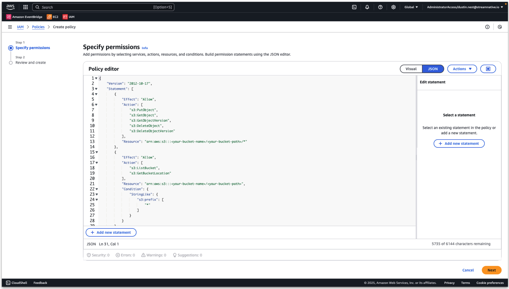
Provide a policy name and click Create policy.

Next we an Create IAM role.
In the AWS console, enter Access management → Roles → Create role.
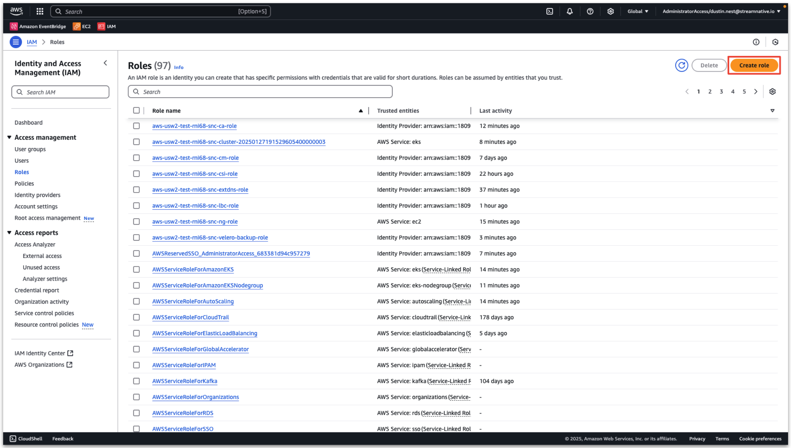
- Trusted entity type: AWS account
- An AWS account: this account
- Enable External ID
- Set External ID: training_test (will be used when creating catalog)
Click Next.
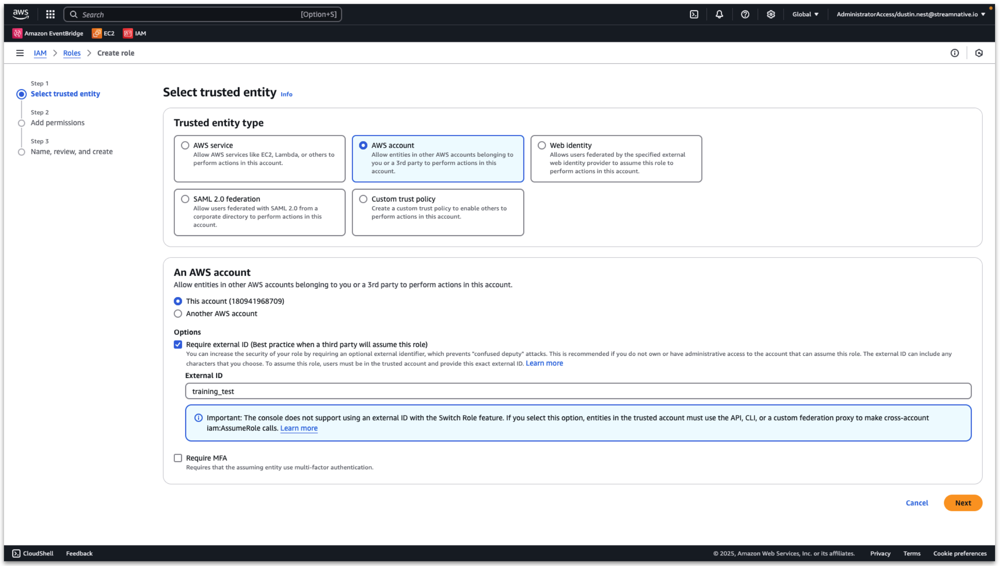
Select the policy created in the previous step. Then click Next
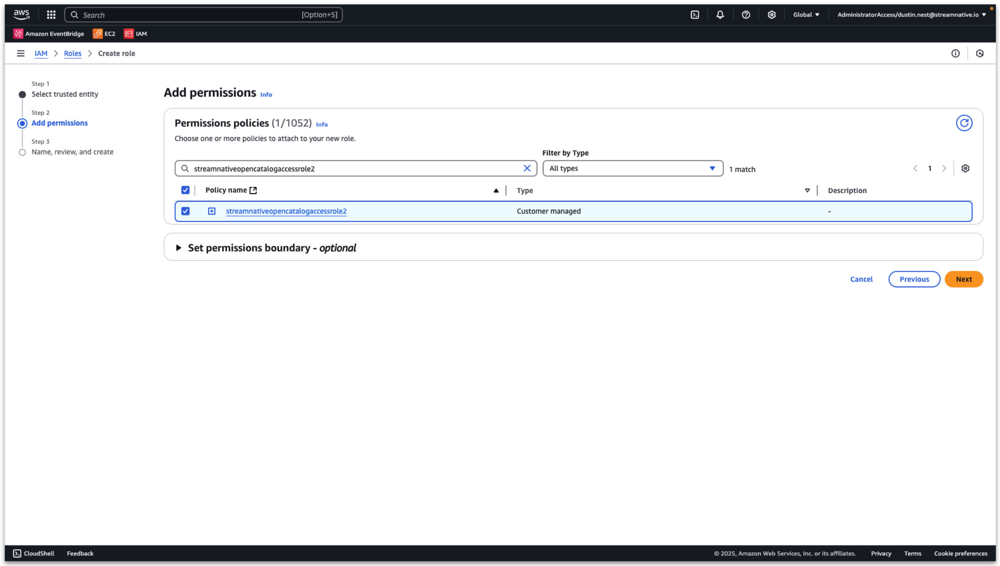
Input a role name and click Create role.

View the detailed role information and record the ARN.
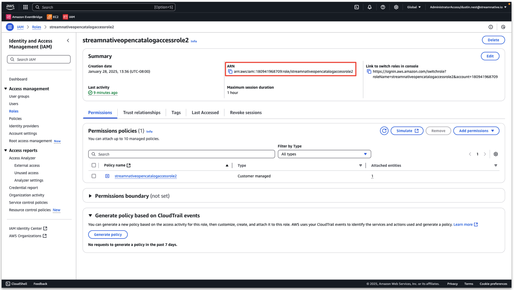
This policy and role are used for Snowflake Open Catalog access to the s3 bucket.
Create Snowflake Open Catalog
Next we create the Snowflake Open Catalog. Click + Create next to Manage Catalogs.

- Name: streamnative
- External: disabled
- Storage provider: S3
- Default base location:
User provided bucket:
s3://<your-bucket-name>/<your-bucket-path>/compaction
StreamNative provided bucket:
s3://<your-cloud-environment-id>/<your-cluster-id>/compaction
- Additional locations: not configured
- S3 role ARN: arn copied from previous step
- External ID: external id created in previous step (training_test)

Click Create and you will see the catalog streamnative created.
Select the Catalog Details tab and record the value of the IAM user arn. The Snowflake Open Catalog will use this arn to access our s3 bucket.

Next we trust the Snowflake Open Catalog Iam user arn.
In the AWS console, enter Access management → Roles, and search for the role we created before.

Then click Trust relationships → Edit trust policy.
Change the value of Principal:AWS to the Snowflake Open Catalog IAM user arn

Then click Update policy and the Snowflake Open Catalog can access the s3 bucket.
Provide StreamNative Access to Snowflake Open Catalog
Our StreamNative BYOC Ursa Cluster will need a connection to access the Snowflake Open Catalog. We will also reuse this connection for Snowflake AI Data Cloud to access Snowflake Open Catalog.
Click + Create next to Set Up Connections.

- Name: streamnativeconnection
- Query Engine: not configured
- Create new principal role: enable
- Principal Role Name: streamnativeprincipal

Then click Create, and you will see a pane. Record the Client ID and Client Secret for this connection as CLIENT ID:SECRET. The StreamNative BYOC Ursa Cluster needs it to access the Snowflake Open Catalog.

We now have a Service Connection called streamnativeconnection linked to the Principal Role streamnativeprincipal.
Next we create a Snowflake Catalog Role and link this to the Principal Role.
Enter Catalogs → Select streamnative Catalog → Roles → + Catalog Role.
- Name: streamnativeopencatalog
- Privileges:
NAMESPACE_CREATE
NAMESPACE_LIST
TABLE_CREATE
TABLE_LIST
TABLE_READ_DATA
TABLE_WRITE_DATA
TABLE_READ_PROPERTIES
TABLE_WRITE_PROPERTIES
NAMESPACE_READ_PROPERTIES
NAMESPACE_WRITE_PROPERTIES
Click Create.

Then click Grant to Principal Role.

- Catalog role to grant: streamnative_open_catalog_role
- Principal role to receive grant: streamnativeprincipal
Then click Grant.

The catalog role streamnative_open_catalog_role now has the 10 required permissions on catalog streamnative. The catalog role streamnative_open_catalog_role is now linked to principal streamnativeprincipal.
We will resuse the connection when connecting Snowflake AI Data Cloud to Snowflake Open Catalog.
To proceed, you will need to first complete the steps for granting vendor access, creating a Cloud Connection, and setting up the Cloud Environment. This process will grant StreamNative permissions into your cloud provider and deploy the required infrastructure before you begin the process of deploying a StreamNative BYOC Ursa Cluster. This video provides an overview of this process with detailed videos available in this playlist.
Once this process is complete, the following video will also guide you through the process of deploying the StreamNative BYOC Ursa Cluster following the directions below.
Create a StreamNative BYOC Ursa Cluster in StreamNative Cloud Console
In this section we create and set up a cluster in StreamNative Cloud. Login to StreamNative Cloud at streamnative.io and click on Create an instance and deploy cluster or + New in the Select an instance pane.

Click on Deploy BYOC.

Enter Instance Name, select your Cloud Connection, select URSA Engine and click on Cluster Location.

Enter Cluster Name, select your Cloud Environment, select Multi AZ and click on Lakehouse Storage Configuration.

To configure Storage Location there are two options as previously discussed.
Option 1: Select Use Your Own Bucket (recommended) to choose your own storage bucket by entering the following details.
- AWS role arn (already created with Terraform module, obtain arn from AWS IAM)
- Region
- Bucket name
- Bucket path
- Confirm that StreamNative has been granted the necessary permissions to access your S3 bucket. The required permissions were granted by running a Terraform module.

Option 2: Select Use Existing BYOC Bucket to choose the bucket created by StreamNative.

If using the Streamnative povided bucket, the UI will present you with the SN Bucket Location in this format to be used when creating the Snowflake Open Catalog.
s3://<your-cloud-environment-id>/<your-cluster-id>/compaction
e.g.
s3://aws-usw2-test-rni68-tiered-storage-snc/o-naa2l-c-vo06zqe-ursa/compaction
To integrate with Snowflake Open Catalog, Enable Catalog Integration and select Snowflake Open Catalog.
- Warehouse: catalog created in Snowflake Open Catalog
- URI: Account URL when creating Snowflake Open Catalog. Append '/polaris/api/catalog' to the URI. See screenshot below.
- Select Authentication Type/OAuth2: create a new secret in StreamNative using Snowflake Open Catalog Service Connection "CLIENT ID:SECRET"
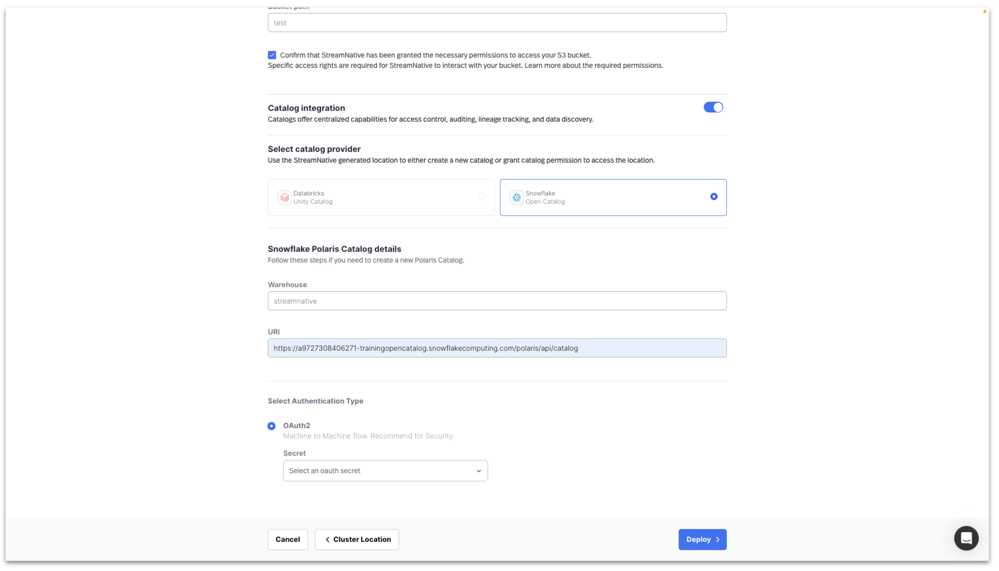
Clicking Cluster Size will test the connection to the s3 bucket and the Snowflake Open Catalog.
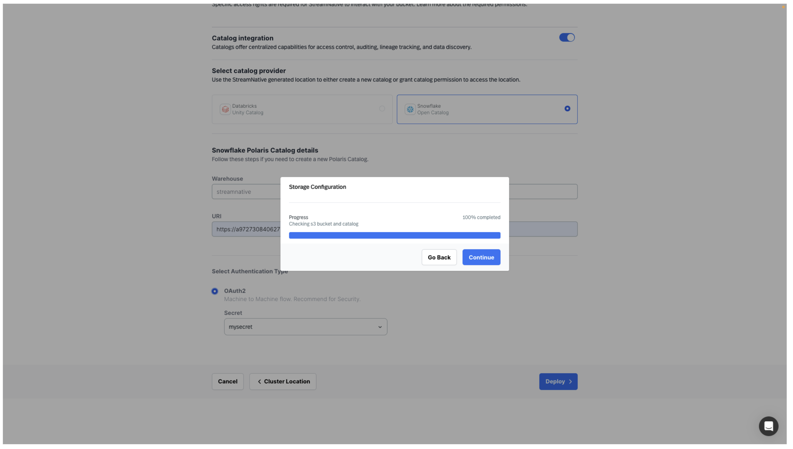
Click Continue to begin sizing your cluster.
For this example, we deploy using the smallest cluster size. Click Finish to start deploying the StreamNative BYOC Ursa Cluster into your Cloud Environment.
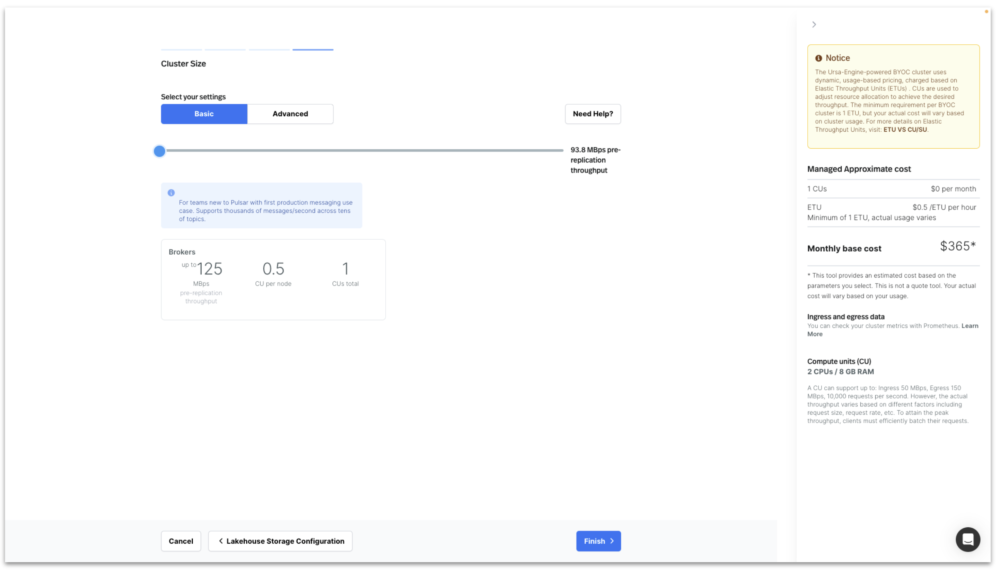
When cluster deployment is complete, it will appear on the Organization Dashboard with a green circle.

The Lakehouse Storage configuration can be viewed by clicking on the Instance on the Organization Dashboard and selecting Configuration in the left pane.
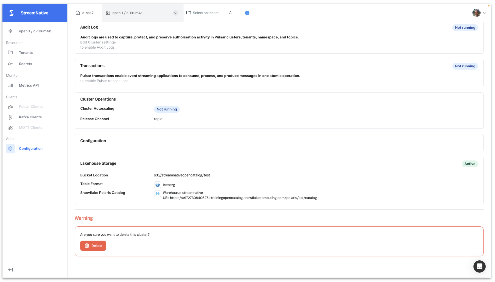
Produce Kafka Messages to Topic with AVRO Schema
We will use the Kafka Java Client to produce Kafka messages with an AVRO schema to a topic.
To obtain Kafka Java Client code for publishing messages to the server, navigate to Kafka Clients page in StreamNative UI. After selecting Java, click Next.

Under Select service account, open the dropdown and select + Create Service Account and follow the prompts to create a new service account.

Under Select authentication type, select API Key and click + Create API Key.
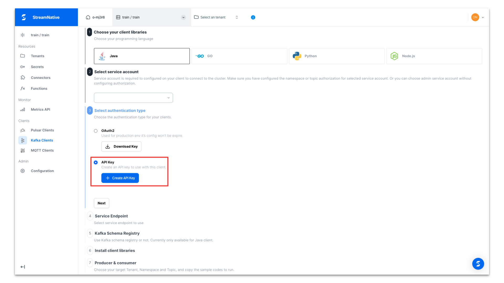
Provide a name for the API Key. Be sure to select the Instance of our newly-created StreamNative BYOC Instance. API Keys are associated with a specific Instance.
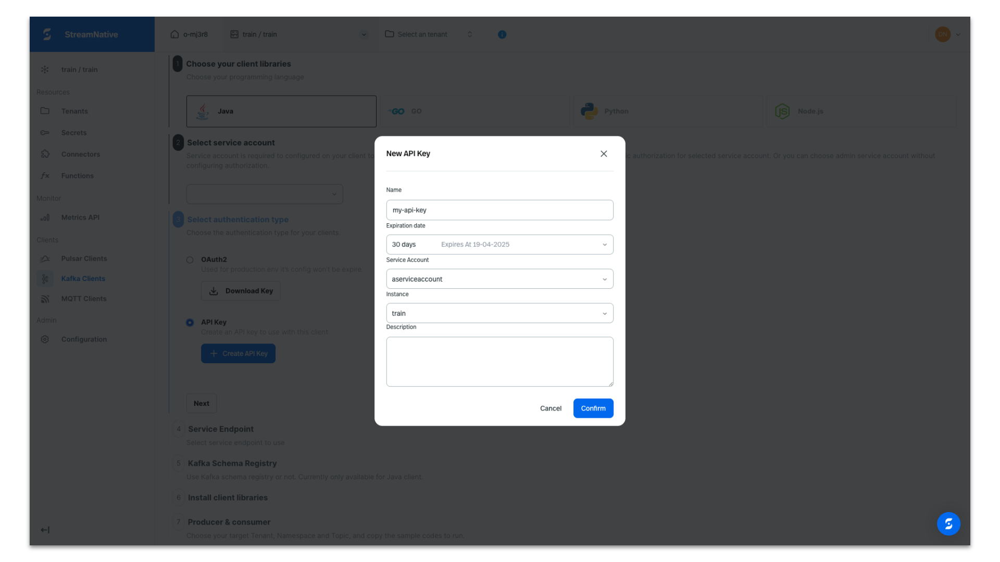
Copy the API Key in case you need it for later use. It will be automatically populated in the producer code we obtain from the UI.

Select the default endpoint of our cluster and click Next. Most likely you will only have the default endpoint.

Enable schema registry and click Next.

Copy the dependencies for your Maven project for use in the pom.xml and click Next.
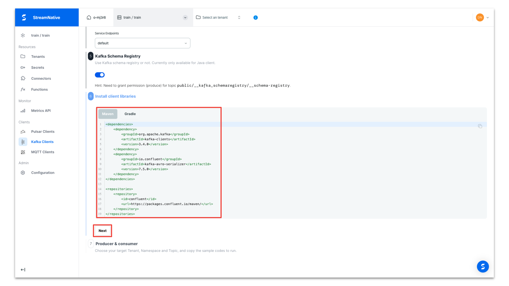
Select the public tenant and default namespace. Select the topic dropdown and click + Create topic to create a new topic.

Provide a topic name and click New Topic.

The producer code is configured to use an AVRO schema, prepopulated with the API key, tenant name, namespace, topic name, and cluster endpoints for the both producing messages and registering the schema. Copy the producer code for use in your Java IDE.

In this example we created a new project in IntelliJ. We have pasted in the dependencies and repositories into the pom.xml and reloaded the project to download the dependencies.

We created a new class called SNCloudTokenProducer and pasted in the Kafka Java Client code from the StreamNative UI. After executing the Kafka Java Client code, the terminal prints the following:
Send hello to kafkaschematopic4-0@0

Review s3 bucket
Navigate to the user provided or StreamNative provided s3 bucket. In this example the user provided bucket is s3://streamnativeopencatalog/test. A storage folder and compaction folder have been created by the cluster.

We published messages to multiple topics in the public/default tenant/namespace. We see folders for the tenant, namespace, and each topic inside the compaction folder.

Inside each topic folder, we find partition and metadata folders.

Verify Tables and Schema are Visible in Snowflake Open Catalog
Once the compaction folder has been created in the s3 bucket, we can verify the tables and schemas are visible in Snowflake Open Catalog. We can see the resulting tables created in streamnative/public/default with a registered schema.

The data is now queryable through Snowflake Open Catalog. In the following step we will configure Snowflake AI Data Cloud to query tables from Snowflake Open Catalog.
Querying a table in Snowflake Open Catalog using Snowflake AI Data Cloud requires completing the following from the Snowflake documentation.
This video shows detailed queries for our example. Exact queries used are also available below. Please refer to Snowflake documentation for any changes in creating an external volume, creating a catalog integration, and creating an externally managed table.
Create an external volume in Snowflake
Please refer to the Snowflake documentation here for the latest code samples for creating an external volume.
The video includes the following details from our example:
- When creating the new policy for Snowflake to access the s3 bucket, use root of the s3 bucket to avoid a list error when verifying storage access.
- When creating an external volume in Snowflake, for STORAGE_BASE_URL use the complete bucket path with s3://<>/<>/compaction.
The following query was used to create the external volume.
CREATE OR REPLACE EXTERNAL VOLUME streamnative_external_volume
STORAGE_LOCATIONS =
(
(
NAME = 'my_streamnative_external_volume'
STORAGE_PROVIDER = 'S3'
STORAGE_BASE_URL = 's3://streamnativeopencatalog/test/compaction/'
STORAGE_AWS_ROLE_ARN = 'arn:aws:iam::180941968709:role/streamnativeopencatalogaccessrole3'
STORAGE_AWS_EXTERNAL_ID = 'training_test'
)
);
The following query was used to describe the external volume to obtain the IAM role arn used by Snowflake AI Data Cloud to query the s3 bucket.
DESC EXTERNAL VOLUME streamnative_external_volume;
The following query was used to verify Snowflake AI Data Cloud has access to the s3 bucket.
SELECT SYSTEM$VERIFY_EXTERNAL_VOLUME('streamnative_external_volume');
Create a catalog integration for Open Catalog
Please refer to the Snowflake documentation here for the latest code samples.
The video includes the following details from our example:
- The CATALOG_NAMESPACE refers to the tenant.namespace in our StreamNative Cluster. Since we published messages to public.default, use public.default as the CATALOG_NAMESPACE.
- We can resuse the CLIENT ID:SECRET for Snowflake Open Catalog to allow access for Snowflake. The CLIENT ID refers to OAUTH_CLIENT_ID and SECRET refers to OAUTH_CLIENT_SECRET.
The following query is used to create a catalog integration for public.default.
CREATE OR REPLACE CATALOG INTEGRATION oc_int
CATALOG_SOURCE = POLARIS
TABLE_FORMAT = ICEBERG
CATALOG_NAMESPACE= 'public.default'
REST_CONFIG = (
CATALOG_URI = 'https://a9727308406271-trainingopencatalog.snowflakecomputing.com/polaris/api/catalog'
WAREHOUSE = 'streamnative'
)
REST_AUTHENTICATION = (
TYPE = OAUTH
OAUTH_CLIENT_ID = '<client id>'
OAUTH_CLIENT_SECRET = '<client secret>'
OAUTH_ALLOWED_SCOPES = ( 'PRINCIPAL_ROLE:ALL' )
)
ENABLED = TRUE;
You will need to create a new catalog integration for each tenant.namespace.
Create an externally managed table
Please refer to the Snowflake documentation here for the latest code samples.
The video includes the following details from our example:
- A Snowflake Open Catalog warehouse.schema.table (e.g. streamnative.public.default.kafkaschematopic) is mapped to a Snowflake database.schema.table (e.g. training.public.kafkaschematopic)
- Use AUTO_REFRESH = TRUE; in CREATE ICEBERG TABLE to ensure new data is viewable in Snowflake.
The following query was used to create an externally managed table.
CREATE ICEBERG TABLE kafkaschematopic
CATALOG = 'oc_int'
EXTERNAL_VOLUME = 'streamnative_external_volume'
CATALOG_TABLE_NAME = 'kafkaschematopic'
AUTO_REFRESH = TRUE;
You will need to create a new externally managed table for each topic.
Once completing these steps, you will be able to query the Iceberg Table registered in Snowflake Open Catalog through Snowflake AI Data Cloud.
The following are example queries for viewing the data in Snowflake AI Data Cloud.
select * FROM TRAINING.PUBLIC.kafkaschematopic LIMIT 10
select COUNT(*) FROM TRAINING.PUBLIC.kafkaschematopic
Congratulations on creating a Streaming Augmented Lakehouse powered by StreamNative's Ursa Engine with built-in support for Iceberg and Snowflake Open Catalog. Contact StreamNative to learn more.
What You Learned
- How to create a Snowflake Open Catalog
- How to deploy a StreamNative BYOC Ursa Cluster integrated with Snowflake Open Catalog
- How to publish Kafka messages to the StreamNative Ursa Cluster using Kafka Java Client
- How to query tables visible in Snowflake Open Catalog in Snowflake AI Data Cloud